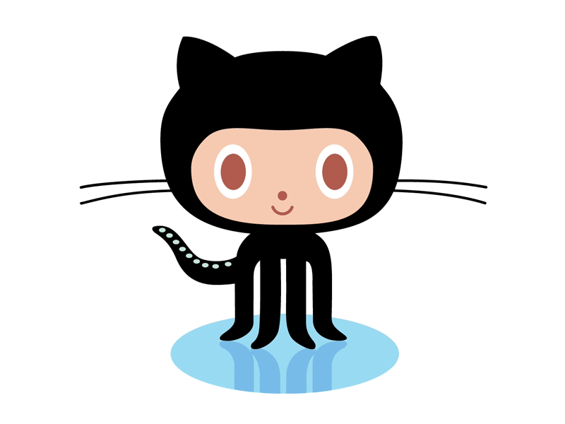

Introduction to Git and GitHub
Introduction to Git and GitHub
Master version control and collaborative coding with this comprehensive guide. Learn essential Git commands, GitHub workflows, and best practices for modern software development.

Learning Modules
Installation & Setup
Get started by installing Git, creating your GitHub account, and setting up SSH keys for secure authentication.
Git & GitHub Basics
Understand core concepts: repositories, commits, version control, and the difference between Git and GitHub.
Branching & Merging
Master non-linear workflows with branches, pull requests, and collaborative development strategies.
Command Reference
Quick reference guide for essential Git commands including clone, add, commit, push, pull, and more.
Workflows
Learn professional workflows including feature branches, team collaboration patterns, and best practices.
Additional Resources
Curated collection of tutorials, cheat sheets, interactive exercises, and further reading materials.
Key Concepts You’ll Learn
Track changes, revert to previous states, and maintain a complete history of your project
Work seamlessly with teams through branches, pull requests, and code reviews
Clone repositories, work locally, and synchronize with remote repositories
Contribute to projects, fork repositories, and participate in the global dev community